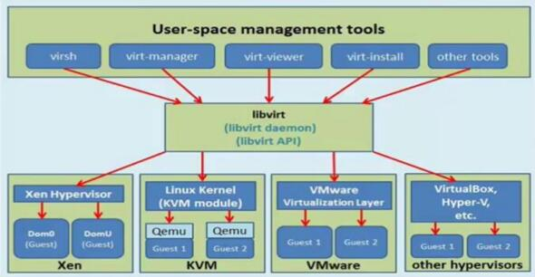
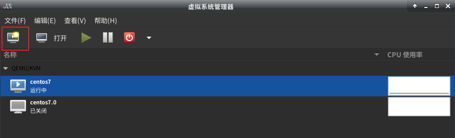
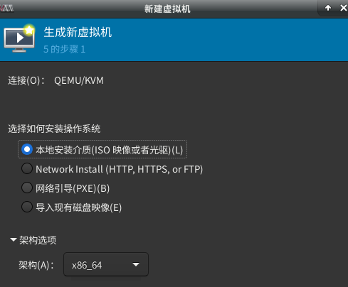
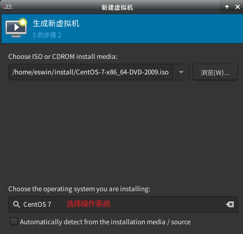
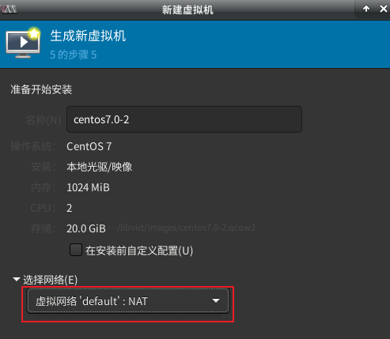
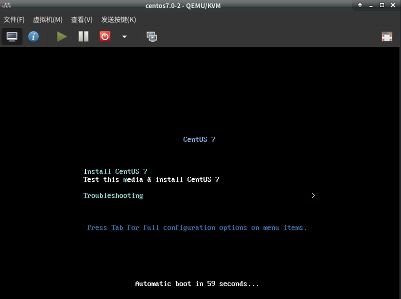
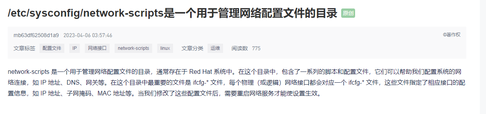
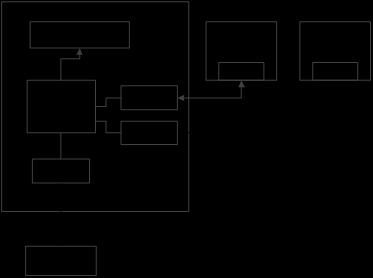

虚拟化技术
- kvm相关安装包及其作用
- qemu-kvm 主要的KVM程序包
- python-virtinst 创建虚拟机所需要的命令行工具和程序库
- virt-manager GUI虚拟机管理工具
- virt-top 虚拟机统计命令
- virt-viewer GUI连接程序，连接到已配置好的虚拟机
- libvirt C语言工具包，提供libvirt服务
- libvirt-client 虚拟客户机提供的C语言工具包
- virt-install 基于libvirt服务的虚拟机创建命令
- bridge-utils 创建和管理桥接设备的工具
- virt-clone 用于克隆现有非活动访客的命令行工具。它复制磁盘映像，并定义使用新名称的配置，UUID和MAC地址指向复制的磁盘。
- virt-xml 编辑libvirt域XML的命令行工具。
- virt-convert 转换OVF和VMX VM配置、以便与libvirt一起运行的命令行工具。
- virt-bootstrap 为基于libvirt的容器设置根文件系统提供一种简易方法的命令工具。
安装虚拟化软件包
1 | # yum install qemu-kvm libvirt |
virt-manager
什么是virt-manager
- Virt-manager的全称是虚拟机管理器，这种图形用户界面应用程序用于通过libvirt管理虚拟机。尽管它主要为KVM访客而创建，也可以管理XEN和LXC容器。它有嵌入式VNC和SPICE客户端查看应用程序，可查看运行中虚拟机的全屏控制台。
- 虚拟机管理器允许用户执行以下操作：
- 创建、编辑、启动、挂起、恢复和停止虚拟机。
- 查看和控制每个虚拟机的控制台。
- 查看所有运行中的虚拟机和主机。
- 查看每个虚拟机的性能和利用率统计信息。
- 查看虚拟机和主机的实时性能和资源利用率统计信息。
- 管理本地或远程运行的KVM、Xen或QEMU虚拟机。
- 管理LXC容器。
创建虚拟机
打开virt-manager
1 | // 终端输入 |
开始创建新虚拟机，点击主窗口左上角的按钮：

选择安装模式，可以选择本地安装介质、网络引导/安装或导入现有虚拟磁盘：

可以选择本地安装介质，后续选择ISO镜像路径：

随后的两个步骤调整新虚拟机的 CPU、内存和磁盘大小。网络可以选择桥接和NAT模式，默认选择NAT 与外部隔离。

重定向安装操作系统

安装完，即可进入操作系统
virt-install
- virt-install是一个使用“libvirt” hypervisor 管理库构建新虚拟机的命令行工具，能够为KVM、Xen或其它支持libvrit API的hypervisor创建虚拟机并完成GuestOS安装；此外，能够基于串行控制台、VNC或SDL支持文本或图形安装界面。安装过程可以使用本地的安装介质如CDROM，也可以通过网络方式如NFS、HTTP或FTP服务实现。对于通过网络安装的方式，virt-install可以自动加载必要的文件以启动安装过程而无须额外提供引导工具。virt-install也支持PXE方式的安装过程，也能够直接使用现有的磁盘映像直接启动安装过程。
参数说明
一般选项
- 指定虚拟机的名称、内存大小、VCPU个数及特性等；
1
2
3
4
5
6
7
8
9
10
11
12
13
14
15
16
17
18
19
20
21
22
23
24
25-n NAME, --name=NAME：虚拟机名称，需全局惟一；
-r MEMORY, --ram=MEMORY：虚拟机内在大小，单位为MB；
--vcpus=VCPUS[,maxvcpus=MAX][,sockets=#][,cores=#][,threads=#]：VCPU个数及相关配置；
--cpu=CPU：CPU模式及特性，如coreduo等；可以使用qemu-kvm -cpu ?来获取支持的CPU模式；
-c CDROM, --cdrom=CDROM：光盘安装介质；
-l LOCATION, --location=LOCATION：安装源URL，支持FTP、HTTP及NFS等，如ftp://172.16.0.1/pub；
--pxe：基于PXE完成安装； --livecd: 把光盘当作LiveCD；
--os-type=DISTRO_TYPE：操作系统类型，如Linux、unix或windows等；
--os-variant=DISTRO_VARIANT：某类型操作系统的变体，如rhel5、fedora8等；
-x EXTRA, --extra-args=EXTRA：根据--location指定的方式安装GuestOS时，用于传递给内核的额外选项，例如指定kickstart文件的位置，
--extra-args "ks=http://172.16.0.1/class.cfg"
--boot=BOOTOPTS：指定安装过程完成后的配置选项，如指定引导设备次序、使用指定的而非安装的kernel/initrd来引导系统启动等 ；例如： --boot cdrom,hd,network：指定引导次序；
--boot kernel=KERNEL,initrd=INITRD,kernel_args=”console=/dev/ttyS0”：指定启动系统的内核及initrd文件；
- 指定虚拟机的名称、内存大小、VCPU个数及特性等；
安装方法
- 指定安装方法、GuestOS类型等；
1
2
3
4
5
6
7
8
9
10-c CDROM, --cdrom=CDROM：光盘安装介质；
-l LOCATION, --location=LOCATION：安装源URL，支持FTP、HTTP及NFS等，如ftp://172.16.0.1/pub；
--pxe：基于PXE完成安装；
--livecd: 把光盘当作LiveCD；
--os-type=DISTRO_TYPE：操作系统类型，如linux、unix或windows等；
--os-variant=DISTRO_VARIANT：某类型操作系统的变体，如rhel5、fedora8等；
-x EXTRA, --extra-args=EXTRA：根据--location指定的方式安装GuestOS时，用于传递给内核的额外选项，例如指定kickstart文件的位置，--extra-args "ks=http://172.16.0.1/class.cfg"
--boot=BOOTOPTS：指定安装过程完成后的配置选项，如指定引导设备次序、使用指定的而非安装的kernel/initrd来引导系统启动等 ；例如：
--boot cdrom,hd,network：指定引导次序；
--boot kernel=KERNEL,initrd=INITRD,kernel_args=”console=/dev/ttyS0”：指定启动系统的内核及initrd文件；
- 指定安装方法、GuestOS类型等；
存储配置
- 指定存储类型、位置及属性等；
1
2
3
4
5
6
7
8
9
10--disk=DISKOPTS：指定存储设备及其属性；格式为--disk /some/storage/path,opt1=val1，opt2=val2等；
常用的选项有：
device：设备类型，如cdrom、disk或floppy等，默认为disk；
bus：磁盘总结类型，其值可以为ide、scsi、usb、virtio或xen；
perms：访问权限，如rw、ro或sh（共享的可读写），默认为rw；
size：新建磁盘映像的大小，单位为GB；
cache：缓存模型，其值有none、writethrouth（缓存读）及writeback（缓存读写）；
format：磁盘映像格式，如raw、qcow2、vmdk等；
sparse：磁盘映像使用稀疏格式，即不立即分配指定大小的空间；
--nodisks：不使用本地磁盘，在LiveCD模式中常用；
- 指定存储类型、位置及属性等；
网络
- 指定网络接口的网络类型及接口属性如MAC地址、驱动模式等；
1
2
3-w NETWORK, --network=NETWORK,opt1=val1,opt2=val2：将虚拟机连入宿主机的网络中，其中NETWORK可以为：
bridge=BRIDGE：连接至名为“BRIDEG”的桥设备；
network=NAME：连接至名为“NAME”的网络； Virtual network 'default': NAT
- 指定网络接口的网络类型及接口属性如MAC地址、驱动模式等；
其他常用选项
1
2
3model：GuestOS中看到的网络设备型号，如e1000、rtl8139或virtio等；
mac：固定的MAC地址；省略此选项时将使用随机地址，但无论何种方式，对于KVM来说，其前三段必须为52:54:00；
--nonetworks：虚拟机不使用网络功能；图形配置
- 定义虚拟机显示功能相关的配置，如VNC相关配置；
1
2
3
4
5
6--graphics TYPE,opt1=val1,opt2=val2：指定图形显示相关的配置，此选项不会配置任何显示硬件（如显卡），而是仅指定虚拟机启动后对其进行访问的接口；
TYPE：指定显示类型，可以为vnc、sdl、spice或none等，默认为vnc；
port：TYPE为vnc或spice时其监听的端口；
listen：TYPE为vnc或spice时所监听的IP地址，默认为127.0.0.1，可以通过修改/etc/libvirt/qemu.conf定义新的默认值；
password：TYPE为vnc或spice时，为远程访问监听的服务进指定认证密码；
--noautoconsole：禁止自动连接至虚拟机的控制台；
- 定义虚拟机显示功能相关的配置，如VNC相关配置；
设备选项
- 指定文本控制台、声音设备、串行接口、并行接口、显示接口等；
1
2
3
4--serial=CHAROPTS：附加一个串行设备至当前虚拟机，根据设备类型的不同，可以使用不同的选项，格式为“--serial type,opt1=val1,opt2=val2,...”，例如：
--serial pty：创建伪终端；
--serial dev,path=HOSTPATH：附加主机设备至此虚拟机；
--video=VIDEO：指定显卡设备模型，可用取值为cirrus、vga、qxl或vmvga；
- 指定文本控制台、声音设备、串行接口、并行接口、显示接口等；
虚拟化平台选项
- 虚拟化模型（hvm或paravirt）、模拟的CPU平台类型、模拟的主机类型、hypervisor类型（如kvm、xen或qemu等）以及当前虚拟机的UUID等；
1
2
3
4
5
6
7
8
9
10
11
12
13-v, --hvm：当物理机同时支持完全虚拟化和半虚拟化时，指定使用完全虚拟化；
-p, --paravirt：指定使用半虚拟化；
--virt-type：使用的hypervisor，如kvm、qemu、xen等；所有可用值可以使用’virsh capabilities’命令获取；
图像
--graphics TYPE,opt1=val1,opt2=val2：指定图形显示相关的配置，此选项不会配置任何显示硬件（如显卡），而是仅指定虚拟机启动后对其进行访问的接口；
TYPE：指定显示类型，可以为vnc、sdl、spice或none等，默认为vnc； port：
TYPE为vnc或spice时其监听的端口； listen：TYPE为vnc或spice时所监听的IP地址，默认为127.0.0.1，可以通过修改/etc/libvirt/qemu.conf定义新的默认值； password：TYPE为vnc或spice时，为远程访问监听的服务进指定认证密码； --noautoconsole：禁止自动连接至虚拟机的控制台；
- 虚拟化模型（hvm或paravirt）、模拟的CPU平台类型、模拟的主机类型、hypervisor类型（如kvm、xen或qemu等）以及当前虚拟机的UUID等；
其他
1
2
3
4
5--autostart：指定虚拟机是否在物理启动后自动启动；
--print-xml：如果虚拟机不需要安装过程(--import、--boot)，则显示生成的XML而不是创建此虚拟机；默认情况下，此选项仍会创建磁盘映像；
--force：禁止命令进入交互式模式，如果有需要回答yes或no选项，则自动回答为yes；
--dry-run：执行创建虚拟机的整个过程，但不真正创建虚拟机、改变主机上的设备配置信息及将其创建的需求通知给libvirt；
-d, --debug：显示debug信息；
尽管virt-install命令有着类似上述的众多选项，但实际使用中，其必须提供的选项仅包括–name、–ram、–disk（也可是–nodisks）及安装过程相关的选项。此外，有时还需要使用括 –connect=CONNCT选项来指定连接至一个非默认的hypervisor。
其它
- 重要：
- –initrd-inject 和 –extrs-args 裡 ks file 的寫法，前者要寫完整的路徑(和檔名)，後者只要寫檔名
- 用–extra-args 之後，如果 iso 位置前面的參數是 –cdrom 的話會報錯，必須用 –location
- –extra-args #当执行从”–location”选项指定位置的客户机安装时，附加内核命令行参数到安装程序。例如：”ks=http://172.25.254.116/ks.cfg"指定自动应答文件
1
2
3
4
5
6
7
8
9
10
11
12
13
14virt-install \
--name $NAME \
--vcpus 1 \
--ram 1024 \
--disk path=$DISKPATH,size=$DISKSIZE \
--os-variant rhel7 \
--network=bridge:$BR1 \
--network=bridge:$BR2 \
--nographics \
--initrd-inject $KSPATH \
--extra-args "ks=file:/$KSNAME console=tty0 console=ttyS0,115200n8" \
--location=$ISOPATH \
--autostart \
--noautoconsole # without connect to console automatically1
2--initrd-inject：指定ks.cfg文件路径
--extra-args：根据location指定的方式安装系统时，用于给内核传递额外的选项
1 | --initrd-inject ks-1.cfg # 自动部署的配置文件（可含路径） |


安装虚拟机
KickStart
什么是kickstart
- kickstart是一种无人值守的安装方式。它的工作原理是在安装过程中记录典型的需要人工干预填写的各种参数，并生成一个配置文件（ks.cfg），在安装过程中，安装程序首先会去查找ks配置文件，如果找到合适的参数，就采用所找到的参数；如果没有找到合适的参数，便需要安装者手动设定。所以，如果kickstart文件涵盖了安装过程中需要设定的所有参数，安装者只需要告诉安装程序从何处取ks.cfg文件，就能实现系统安装的自动化。
- kickstart 安装提供一个安装过程自动化的方法，可以是部分自动化，也可以是完全自动化。
把kickstart文件加入iso, 重新制作半自动化的iso
- 机器读取到iso文件后自动完成操作系统的安装
- 将待制作的centos iso文件挂载到/mnt/目录
1
2mkdir /mnt/myiso
mount CentOS-7-x86_64-Minimal-1810.iso /mnt/myiso - 将/mnt/myiso下的所有文件复制到新的目录/tmp/mycentos
1
2mkdir /tmp/mycentos/
cp -r /mnt/myiso /tmp/mycentos/ - 创建kickstart文件
- 可以直接复制之前安装好的centos /home目录下的 anaconda-ks.cfg 文件作为配置文件。
- 将anaconda-ks.cfg 重命名为ks.cfg
- 也可以利用system-config-kickstart 进行生成ks.cfg文件 参考
将配置好的kickstart文件保存到/tmp/mycentos，文件内容如下:
1
2
3
4
5
6
7
8
9
10
11
12
13
14
15
16
17
18
19
20
21
22
23
24
25
26
27
28
29
30
31
32
33
34
35
36
37
38
39
40
41
42
43
44
45
46
47
48
49
50
51
52
53
54#version=DEVEL
# System authorization information
auth --enableshadow --passalgo=sha512
# License agreement
eula --agreed
# Use CDROM installation media
cdrom
# Use text mode install
text
# Firewall configuration
firewall --enabled --port=https:tcp,ipp:tcp --service=http,ssh,ftp
firstboot --disable
ignoredisk --only-use=vda
# Keyboard layouts
keyboard --vckeymap=us --xlayouts='us'
# System language
lang en_US.UTF-8
# Network information
network --bootproto=dhcp --device=eth0 --noipv6 --activate
network --bootproto=dhcp --hostname=yjj_centos-7
# Reboot after installation
reboot
# Root password
rootpw --plaintext king
# SELinux configuration
selinux --disabled
# System services
services --enabled="chronyd"
# Do not configure the X Window System
skipx
# System timezone
timezone Asia/Shanghai --isUtc
# System bootloader configuration
bootloader --append=" crashkernel=auto" --location=mbr --boot-drive=vda
autopart --type=lvm
# Clear the Master Boot Record
zerombr
# Partition clearing information
clearpart --none --initlabel
%packages --nobase --ignoremissing
@base
@core
bash-completion
chrony
kexec-tools
vim
%end
%addon com_redhat_kdump --enable --reserve-mb='auto'
%end修改启动文件
- 进入/tmp/mycentos 目录
- 打开 isolinux/isolinux.cfg原文件中的内容
1
2
3
4
5
6
7cat isolinux/isolinux.cfg
...
label linux
menu label ^Install CentOS 7
kernel vmlinuz
append initrd=initrd.img inst.stage2=hd:LABEL=CentOS\x207\x20x86_64 quiet
... - 修改为
1
2
3
4
5
6...
label linux
menu label ^Install CentOS 7
kernel vmlinuz
append initrd=initrd.img inst.stage2=hd:LABEL=MYCENTOS inst.ks=hd:LABEL=MYCENTOS:/ks.cfg quiet
...“MYCENTOS”可以任意命名，后面mkisofs时候保持一致就好
重新制作ISO文件
- genisoimage 软件
1
yum -y install genisoimage
- genisoimage 软件
- 制作ISO文件
1
2
3cd /tmp/mycentos
mkisofs -o mycentos.iso -input-charset utf-8 -b isolinux/isolinux.bin -c isolinux/boot.cat -no-emul-boot -boot-load-size 4 -boot-info-table -R -J -v -T -joliet-long -V MYCENTOS /tmp/mycentos/
- 制作ISO文件
- 制作完成
- 用新制作的iso文件 mycentos.iso 安装系统
PXE
PXE（Pre-boot Execution Environment，预启动执行环境），工作于Client/Server的网络模式，支持PXE的客户端在启动过程中，能够从DHCP服务器获取IP，结合TFTP（trivial file transfer protocol）等协议可以实现客户端的网络引导和安装。
TFTP
TFTP（Trivial File Transfer Protocol，简单文件传输协议），该协议用来实现客户机与服务器之间的简单文件传输，它提供不复杂、开销不大的文件传输服务。
DHCP
- dhcp服务器和客户端 都连接到 宿主机的 网络上（nat模式，但是没有开启自动分配ip，虚拟dhcp服务关闭），需要在虚拟机上的dhcp服务器来分配 宿主机nat 模式的 网络的ip （和dhcp服务器所在的ip在一个网络）
- 都需要关闭宿主机的虚拟DHCP服务
- kvm
- Dnsmasq 提供 DNS 缓存和 DHCP 服务功能。作为域名解析服务器(DNS)，dnsmasq可以通过缓存 DNS 请求来提高对访问过的网址的连接速度。作为DHCP 服务器，dnsmasq 可以用于为局域网电脑分配内网ip地址和提供路由。DNS和DHCP两个功能可以同时或分别单独实现。dnsmasq轻量且易配置，适用于个人用户或少于50台主机的网络。此外它还自带了一个 PXE 服务器。
- dnsmasq（ DNS和DHCP）服务
NAT
主机模式
双网卡
自动化安装（pxe+kickstart）
–network network=default 配置网络使用默认，NAT 方式
dnsmasq 服务
libvirt默认使用了一个名为default的nat网络，这个网络默认使用virbr0作为桥接接口，使用dnsmasq来为使用nat网络的虚拟机提供dns及dhcp服务，dnsmasq生效后的配置文件默认保存在以下路径：
/var/lib/libvirt/dnsmasq/default.hostsfile mac&&ip绑定的配置文件
/var/lib/libvirt/dnsmasq/default.leases dhcp分配到虚拟机的ip地址列表
/var/lib/libvirt/network/default.xml default网络的配置文件
dnsmasq服务的启动脚本在/etc/init.d/dnsmasq ，但是我们如果手动使用此脚本来启动服务将会导致dnsmasq读取其自己的配置文件来启动此服务，因此这么做是不推荐的，因为这个服务完全由libvirtd在接管，
当libvirtd服务启动的时候，它会将它管理的被标记为autostart的network一并启动起来，而启动network的时候就会自动调用dnsmasq并赋予其适宜的配置文件来运行服务。
使用libvirt管理的网络都会用到dnsmasq来产生相应的配置，比如定义了一个名为route110的network，那么这个route110将使用一个新的桥接接口virbr1来接入网络，并使用dnsmasq产生名为route110.hostsfile和route110.leases的配置文件。
其实这里提到的virbr0和virbr1都是libvirt产生的虚拟网卡，其作用就相当于一个虚拟交换机，为虚拟机提供网络转发服务。
————————————————
版权声明：本文为CSDN博主「Tom Ma.」的原创文章，遵循CC 4.0 BY-SA版权协议，转载请附上原文出处链接及本声明。
原文链接：https://blog.csdn.net/mshxuyi/article/details/105837671
https://www.zsythink.net/archives/4272 // 虚机网络
- 参考
- 
- /etc/sysconfig/network-scripts/ 用于配置主机的物理网络接口，
- 对于机器本身的网络（外部不可见）
- 而 /etc/libvirt/qemu/networks 用于配置虚拟化环境中的虚拟网络。您根据您的需求和环境来选择修改哪个目录下的配置文件。
- 虚拟的网络配置
- Ubuntu 是 /etc/network 里面的 interfaces 文件
- 而 /etc/libvirt/qemu/networks 用于配置虚拟化环境中的虚拟网络。您根据您的需求和环境来选择修改哪个目录下的配置文件。
vmnet0，实际上就是一个虚拟的网桥
vmnet0，实际上就是一个虚拟的网桥，这个网桥有很若干个端口，一个端口用于连接你的Host，一个端口用于连接你的虚拟机，他们的位置是对等的，谁也不是谁的网关。所以在Bridged模式下，你可以让虚拟机成为一台和你的Host相同地位的机器。
vmnet1，这是一个Host-Only网络模式
vmnet1，这是一个Host-Only网络模式，这是用于建立一个与世隔绝的网络环境所用到的，其中vmnet1也是一个虚拟的交换机，交换机的一个 端口连接到你的Host上，另外一个端口连接到虚拟的DHCP服务器上（实际上是vmware的一个组件），另外剩下的端口就是连虚拟机了。虚拟网卡 “VMWare Virtual Ethernet Adapter for VMnet1”作为虚拟机的网关接口，为虚拟机提供服务。在虚拟机启动之后，如果你用ipconfig命令，你会很清楚的看到，你的默认网关就是指向 “VMWare Virtual Ethernet Adapter for VMnet1”网卡的地址的。（实际上它并不能提供路由，这是VMware设计使然，它是干了除了提供路由之外的一些事情——实际上是我也不知道它干了什 么事情），这里没有提供路由主要表现在没有提供NAT服务，使得虚拟机不可以访问Host-Only模式所指定的网段之外的地址。
vmnet8，这是一个NAT方式，最简单的组网方式了
vmnet8，这是一个NAT方式，最简单的组网方式了，从主机的“VMWare Virtual Ethernet Adapter for VMnet8”虚拟网卡出来，连接到vmnet8虚拟交换机，虚拟交换机的另外的口连接到虚拟的NAT服务器（这也是一个Vmware组件），还有一个口 连接到虚拟DHCP服务器，其他的口连虚拟机，虚拟机的网关即是“VMWare Virtual Ethernet Adapter for VMnet8”网卡所在的机器，废话，这肯定就是你的Host机器啦。同样，用ipconfig也可以看出来，你的虚拟机的默认网关也指向了你的 “VMWare Virtual Ethernet Adapter for VMnet8”虚拟网卡地址。相比之下，可以看出来，NAT组网方式和Host-Only方式，区别就在于是否多了一个NAT服务。
host-only与wmnet1虚拟网卡进行通信
NAT模式与VMnet8虚拟网卡进行通信
桥接使用的是你机器的真实网卡进行上网
用命令来配host-only模式下的网卡:ifconfig eth0 192.168.86.0
ifconfig eth0 ip(要和虚拟网络编辑器里面的VMnet1的ip一致)，配完这个虚拟网卡的ip后你就可以通过在cmd命令里面ping 此ip看是否能ping通，这样没有网线也能实现网络通信了
那么在有网线（意思是有网络的情况下）选择NAT模式，如何配这个VM的ip来实现通信呢
找到真实机器的ip地址后，可以在网络中心或者通过cmd里面的ipconfig来获得当前真实机器的ip地址后，用如下的命令来设置VM的ip:ifconfig eth0 192.168.1.156(假设真实机器的ip是192.168.1.155),要永久生效则需要写入配置文件
区分于 virbr0 是 KVM 默认创建的一个 Bridge，其作用是为连接其上的虚机网卡提供 NAT 访问外网的功能。
virbr0 默认分配了一个IP 192.168.122.1，并为连接其上的其他虚拟网卡提供 DHCP 服务。
virbr0 使用 dnsmasq 提供 DHCP 服务，可以在宿主机中查看该进程信息
ps -elf|grep dnsmasq
在 /var/lib/libvirt/dnsmasq/ 目录下有一个 default.leases 文件，当 VM1 成功获得 DHCP 的 IP 后，可以在该文件中查看到相应的信息
cat /var/lib/libvirt/dnsmasq/default.leases
https://developer.aliyun.com/article/311650
1 |
|
grep vmx /proc/cpuinfo
如果有vmx信息输出，就说明支持VT;如果没有任何的输出，说明你的cpu不支持，将无法使用KVM虚拟机。
1
- 确保BIOS里开启虚拟化功能，即查看是否加载KVM模块
[root@kevin ~]# lsmod | grep kvm
kvm_intel 170086 0
kvm 566340 1 kvm_intel
irqbypass 13503 1 kvm
1 | - 确保BIOS里开启虚拟化功能，即查看是否加载KVM模块 |
如果没有加载，运行以下命令：
[root@kevin ~]# modprobe kvm
[root@kevin ~]# modprobe kvm-intel
[root@kevin ~]# lsmod | grep kvm
kvm_intel 170086 0
kvm 566340 1 kvm_intel
irqbypass 13503 1 kvm
1
2
- 内核模块导出了一个名为/dev/kvm的设备，这个设备将虚拟机的的地址空间独立于内核或者任何应用程序的地址空间。
[root@kevin ~]# ll /dev/kvm
crw-rw-rw-. 1 root kvm 10, 232 1月 29 11:56 /dev/kvm
1
2
### 网络相关
- 桥接网络
如果没有brctl命令（用来管理网桥的工具），则需要安装bridge-utils ，
[root@kevin ~]# apt-get -y install bridge-utils
```

- 为什么要给网桥配置IP ？
1 |
|
1 | ### 网络相关 |
为什么把接口连到网桥上，网桥的mac 就变成了接口的mac地址?
- 与交换机的端口和mac 绑定类似。
L2交换机出于管理需求配置了MAC地址，但实际转发数据和MAC地址无关。
转载请注明来源，欢迎对文章中的引用来源进行考证，欢迎指出任何有错误或不够清晰的表达。可以在下面评论区评论，也可以邮件至 1065016533@qq.com